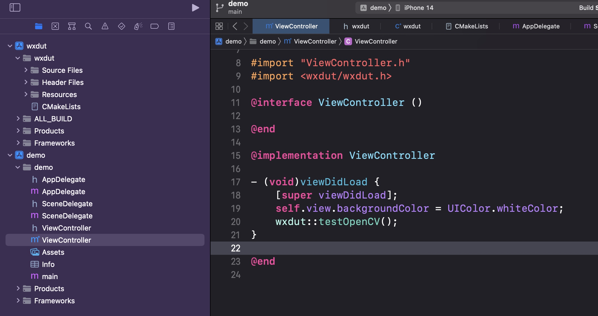
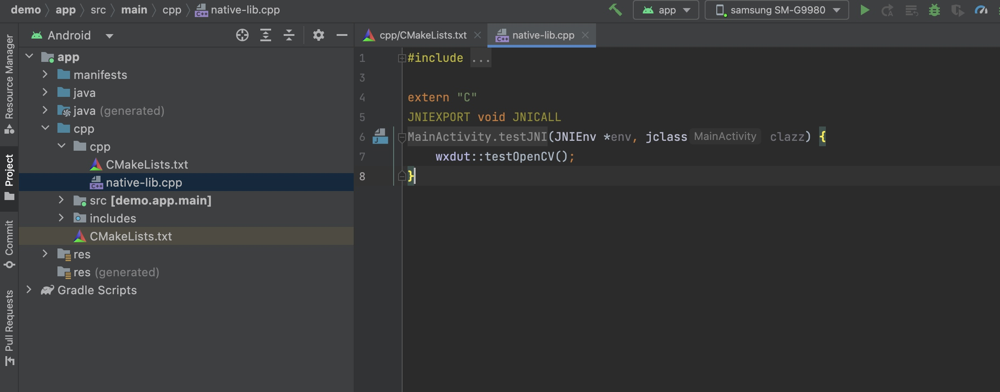
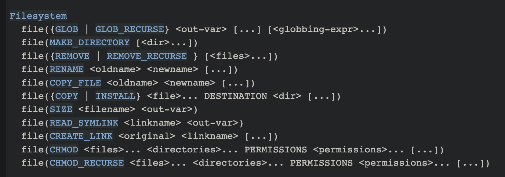
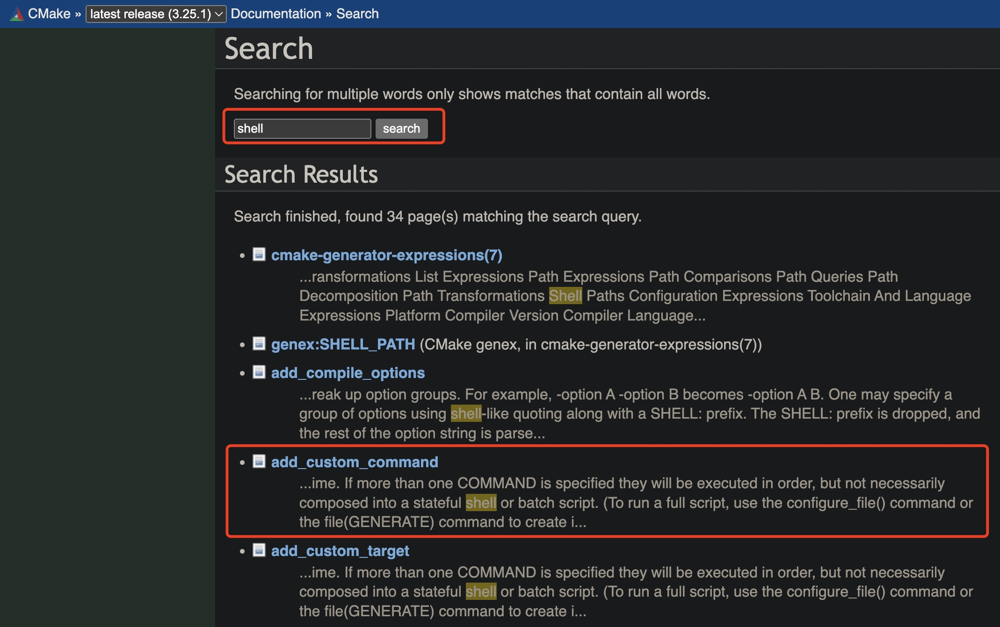

CMake 实用指南
CMake 是一个开源的管理和生成目标工程的工具。本文将介绍 CMake 的概念和主要能力、交叉编译 iOS 和 Android 平台的 library 的步骤，提供了一个可以直接使用的 demo，并提供了一些编写 CMakeList.txt 的建议。
CMake 是什么
CMake 是一个管理源码编译的工具，最初只是为了生成各种 Makefile，现在已经演变成用来生成 XCode、VSCode 等 IDE 的工程，进而再使用对应的 IDE 进行编译。
使用 CMake 的流程很简单：先编写 CMakeList.txt， 然后使用 CMake 生成目标工程，然后再使用相关的 IDE 等工具进行编译。
sequenceDiagram
autonumber
participant SourceCode as 源码 + CMakeList.txt
participant TargetProject as 目标工程
participant TargetBinary as 目标产物
SourceCode->>TargetProject: cmake -G using CMakeList.txt
TargetProject->>TargetBinary: ./gradlew build / xcode build
一个比较常见的用法是编译 C/C++ 代码，然后生成 iOS 、Android、macOS 等平台的库，实现用同一份代码、同一个工具链编译出不同平台的库的跨平台能力。
CMake 可以自动生成多平台编译系统，很好的抹平编译中的平台差异，实现一份代码，多端运行。在跨平台开发中发挥着很重要的作用。
主要步骤
从上面的流程图可以很清楚的知道用 Cmake 进行交叉编译，大致分为几个步骤：
- 安装
cmake，比如macOS上可以通过brew install cmake安装。 - 编写
CMakeLists.txt，按照cmake的语法组织项目。比如需要编译哪个平台的库、头文件有哪些、资源文件有哪些、需要链接那些第三方库等等。 - 生成项目工程（下文会详细说，这里简单带过）
- 如果是
iOS或macOS的话，需要调用cmake生成对应的xcodeproj工程，然后使用xcode编译出产物。还需要下载一个 ios.toolchain.cmake，主要是定义一些cmake需要的变量，以及指定编译器等等。一般来讲，我们只需要引用这个文件，不需要理解和修改这个文件。然后在调用cmake工具生成xcode工程时通过参数 CMAKE_TOOLCHAIN_FILE 传递给cmake。 - 如果是
Android的话，需要生成一个空的library工程，可以通过Android Studio生成，很简单。然后在build.gradle里指定步骤2编写的CMakeLists.txt文件，这样gradle就知道如何编译出产物。
- 如果是
- 使用
./gradlew build或者xcodebuild编译出产物。
CMakeLists.txt 范例
使用 cmake 时最复杂也是最主要的就是编写 CMakeLists.txt 文件了，需要熟悉和使用 cmake 的语法。官方提供了文档，在遇到不熟悉的语法时可以直接参阅，推荐多阅读官方文档，高效且准确。
但是为了快速上手和降低难度，一些中文的实用指南还是很有必要的。这里给一个范例。当然，比较详细的语法太多了，这里无法全部展开，单独搞个 CMake 实用语法 方便查阅，需要用到时翻阅一下即可。
假设我们要用一份 cpp 代码编译出 Android 平台的 libWxdut.so 和 iOS 平台的 wxdut.framework。一个基本的 CMakeLists.txt 类似下面这样 👇🏻
cmake_minimum_required(VERSION 3.8.0) # 指定 cmake 最低版本
set(LIB_NAME "wxdut")
project(${LIB_NAME}) # 项目名称
set(CMAKE_CXX_STANDARD 17) # 编译用到的 c++ 版本
# c/cpp compile flags
set(CMAKE_C_FLAGS
"${CMAKE_C_FLAGS} -Wall -fPIC -frtti -fexceptions -flax-vector-conversions -mfloat-abi=softfp -mfpu=neon"
)
set(CMAKE_CXX_FLAGS
"${CMAKE_CXX_FLAGS} -Wall -fPIC -frtti -fexceptions -flax-vector-conversions -mfloat-abi=softfp -mfpu=neon"
)
# 生产环境都是编译 Release 包，本地环境就编译 Debug 包。可以给不同的 Scheme 指定不同的编译参数
set(CMAKE_C_FLAGS_RELEASE "${CMAKE_C_FLAGS} -Os -DNDEBUG")
set(CMAKE_CXX_FLAGS_RELEASE "${CMAKE_CXX_FLAGS} -Os -DNDEBUG")
set(CMAKE_C_FLAGS_DEBUG "${CMAKE_C_FLAGS} -O0 -DDEBUG")
set(CMAKE_CXX_FLAGS_DEBUG "${CMAKE_CXX_FLAGS} -O0 -DDEBUG")
# 在 iOS 上可能有一些比较特殊的 Scheme，比如 Debug_test，可以通过 CMAKE_CXX_FLAGS_ 拼接 Scheme
# 名字的方式指定特殊参数，比如给 Debug_test 这种 Scheme 设置 -Os 的 Optimization Level
set(CMAKE_C_FLAGS_DEBUG_TEST "${CMAKE_C_FLAGS} -Os")
set(CMAKE_CXX_FLAGS_DEBUG_TEST "${CMAKE_CXX_FLAGS} -Os")
set(LINK_LIBRARY) # 设置一个名为 LINK_LIBRARY 的变量，并且值为空，下面会把需要链接的库都加进去
if(CMAKE_SYSTEM_NAME MATCHES "iOS") # CMAKE 开头的变量一般都是 CMAKE
# 预定义的，我们可以根据这些参数判断平台、架构等等
set(IOS ON)
add_definitions(-D__IOS__) # 添加一些宏定义，这些宏定义是可以在代码中使用的，比如在代码中通过 #ifdef __IOS__
# 判断当前是否是 iOS 平台
endif()
if(CMAKE_SYSTEM_NAME MATCHES "Android")
set(ANDROID ON)
add_definitions(-D__Android__ -D__ANDROID__)
if(CMAKE_ANDROID_ARCH_ABI STREQUAL "arm64-v8a") # 判断安卓的 ABI
endif()
endif()
# Headers
include_directories(src/include) # 通过这种方式导入头文件，这样就可以在 c/cpp 文件中 #include 这些头文件了
file(GLOB_RECURSE EXPORT_HEADER_FILES src/include/*.h)
# 这种方式是给所有 target 引入头文件，还有个 target_include_directories 可以给特定的 target 引入头文件
# 在添加资源文件时不可能枚举所有文件，所以更常见的是使用下面这种递归+模糊搜索的方式
file(GLOB_RECURSE SRC_SOURCE_FILES src/*.cc) # 递归的查找 src 文件夹下的所有以 .cc
# 结尾的文件，并将文件路径存到数组 SRC_SOURCE_FILES
# 中
# 导入库可以用下面这种方式，iOS 和 Android 都是类似的，只不过有一些小区别，比如 Android 需要判断
# CMAKE_ANDROID_ARCH_ABI，iOS 一般都是双架构的库
if(ANDROID)
# 导入 .a 和 .so
include_directories(${PROJECT_SOURCE_DIR}/third-party/opencv/android/include)
set(LINK_LIBRARY
${LINK_LIBRARY}
${PROJECT_SOURCE_DIR}/third-party/opencv/android/${CMAKE_ANDROID_ARCH_ABI}/libopencv_world.so
)
endif(ANDROID)
if(IOS)
# 导入 framework
set(LINK_LIBRARY
${LINK_LIBRARY}
${PROJECT_SOURCE_DIR}/third-party/opencv/ios/opencv2.framework)
# tips: 通过上面这个方式链接 framework 时，实际上生成的 xcode 工程里会自动把这个 framework 所在的文件夹加到
# Framework Search Paths 里，所以不需要手动调用 include_directories 包含头文件
endif(IOS)
if(IOS)
add_library(
${LIB_NAME} STATIC # 创建一个名为 ${LIB_NAME} 的静态库，资源文件为 ${SRC_SOURCE_FILES} 和
# ${EXPORT_HEADER_FILES}
${SRC_SOURCE_FILES} ${EXPORT_HEADER_FILES})
set_target_properties(
${LIB_NAME}
PROPERTIES FRAMEWORK TRUE # 生成的库为 framework 方式
FRAMEWORK_VERSION A
MACOSX_FRAMEWORK_IDENTIFIER com.wxdut.${LIB_NAME}
RESOURCE "")
# 让 xcode 生成并保留调试符号
set_xcode_property(${LIB_NAME} GCC_GENERATE_DEBUGGING_SYMBOLS "YES" "All")
set_xcode_property(${LIB_NAME} DEPLOYMENT_POSTPROCESSING "NO" "All")
set_xcode_property(${LIB_NAME} STRIP_INSTALLED_PRODUCT "NO" "All")
foreach(hfile ${EXPORT_HEADER_FILES}) # framework 里有一些暴漏出去的头文件，可以以这种方式拷贝过去
set_property(
SOURCE ${hfile}
PROPERTY MACOSX_PACKAGE_LOCATION Headers/ # 头文件会放到
# ${LIB_NAME}.framework/Headers
# 文件夹下
)
endforeach(hfile)
target_link_libraries(
${LIB_NAME}
PRIVATE ${LINK_LIBRARY} # LINK_LIBRARY 是一个数组，上面手动导入的库，这里链接到
# ${LIB_NAME}.framework
"-framework JavaScriptCore" # 可以通过这种方式链接一些系统库
)
endif(IOS)
if(ANDROID)
add_library(${LIB_NAME} SHARED ${SRC_SOURCE_FILES} ${EXPORT_HEADER_FILES})
set_target_properties(
${LIB_NAME}
PROPERTIES VERSION 1.0.0
SOVERSION 1
LINK_FLAGS "${LINK_FLAGS}")
target_link_libraries(
${LIB_NAME}
EGL
GLESv2
android
log
camera2ndk
mediandk
${LINK_LIBRARY}) # 链接一些库，比如系统库，或者我们手动导入的库
foreach(hfile ${EXPORT_HEADER_FILES}) # 安卓上库的头文件一般会导出到一个文件夹里，我们可以通过这种方式拷贝过去
file(COPY ${hfile} DESTINATION ${PROJECT_SOURCE_DIR}/android/include/)
endforeach(hfile)
endif(ANDROID)
构建和编译
在编写 CMakeLists.txt 之后，就可以生成目标平台的工程，并调用各端的编译工具进行编译。
Android
在 Android 上，gradle 可以理解并编译 CMakeLists.txt 所描述的工程。
android {
defaultConfig {
externalNativeBuild {
cmake {
targets "wxdut"
arguments "-DANDROID_STL=c++_shared", "-DANDROID_PLATFORM=android-21 -DCMAKE_CXX_STANDARD=17 -DCMAKE_CXX_EXTENSIONS=OFF" # 可以通过 -DXXX 的方式传入参数，然后就可以在 CMakeLists.txt 中获取并使用
abiFilters 'armeabi-v7a','arm64-v8a' # 同时编译 64 和 32 位架构
}
}
}
externalNativeBuild {
cmake {
path "${workspace}/CMakeLists.txt" # 指定 CMakeLists.txt 的路径
}
}
buildTypes {
release {
minifyEnabled false
proguardFiles getDefaultProguardFile('proguard-android.txt')
}
debug { // Debug 版本可以把调试都打开，方便调试源码
debuggable true
jniDebuggable = true
ndk {
debuggable = true
}
renderscriptDebuggable true
minifyEnabled false
}
}
}
然后通过 ./gradlew build 或者 Android Studio 编译出产物。
iOS
iOS 端需要使用 cmake 提供的命令生成 xcode 工程，然后使用 xcode 编译出产物。
# CMAKE_CONFIGURATION_TYPES: https://cmake.org/cmake/help/latest/manual/cmake-buildsystem.7.html#build-configurations
cmake -G Xcode ${CMAKE_LIST_FILE} -B ${BUILD_PATH} \
-DCMAKE_TOOLCHAIN_FILE=${TOOLCHAIN_FILE} \
-DCMAKE_CONFIGURATION_TYPES="Debug;Debug_test;Release;Release_appstore;" \
-DDEPLOYMENT_TARGET=12.0 \
-DPLATFORM=OS64COMBINED \ # 同时编译 arm64 和 x86_64 架构的 framework
-DCUSTOM_PARAMS=${PARAMS} \ # 传入自定义的参数，可以在 CMakeLists.txt 里使用
执行上面的命令会生成一个 xcode 工程，然后可以直接用 xcode 打开 wxdut.xcodeproj 进行编译。
当然，也可以使用 xcodebuild 命令行编译。
xcodebuild -target "ALL_BUILD" \
ONLY_ACTIVE_ARCH=NO \
-configuration Release \
-sdk iphoneos \
CONFIGURATION_BUILD_DIR="${DEVICE_OUTPUT}" \
build
demo 工程
说了这么多，提供一个可以编译的 demo 及相关工具才更实用，一个可运行的工程最有价值。
在 demo 中，会提供一个 iOS 的 demo 和一个 Android 的 demo，使用同一个 CMakeList.txt 文件进行交叉编译，并在 demo 中调用编译产物的 API。
希望大家能关注我的公众号，回复 cmake 即可得到 demo 工程。


编写 CMakelist.txt 的一些建议
CMakelist.txt 的语法略显笨重和繁琐，给一些建议。
格式化
CMakelist.txt 行数通常会比较多，为了便于理解和维护，最好能像平时写代码一样格式化一下。
我目前是用的这个开源工具，还挺好用的，推荐给大家：cmake_format
模块拆分
在实际开发中，可以考虑将业务模块化，将底层的模块单独抽离一个 CMakelist.txt 做下沉，然后上层的 CMakelist.txt 通过 add_subdirectory 的方式引用。
这样不仅让每个 CMakelist.txt 都很小便于阅读和维护，而且还能让项目结构和依赖更加清晰明了。
如何快速掌握 CMakeList.txt 语法
估计大多数人首次看到 CMakeList.txt 的语法格式都很懵逼，新的语法格式，而且之前完全没了解过，如何快速上手呢。
其实所有语法在官方文档里都有详细的介绍，对新手来说最大的问题是不熟悉语法格式，以及不知道具体有哪些语法和能力，真正用的时候不知道怎么找到对应的语法。
语法格式
以操作文件为例，官方的语法基本是这样，其中：
- 全大写的
GLBO、COPY这种就是关键词，类似于c++里的const、float这种保留字符，有特殊的含义，直接原样写上就行。 <out-var>这种一个尖括号<>里包含一个变量名，就是代表这里是需要填一个变量，可以作为入参，也可以用于语法执行完之后获取执行结果。<files>...这种变量后面跟着...代表可以传多个参数（至少传一个参数）。[<globbing-expr>...]这种中括号[]括起来的是可选参数，可以传参也可以直接忽略。其中如果有...这种就表示可以传多个参数（也可以一个参数都不传）。REMOVE | REMOVE_RECURSE这种用|隔开，代表多选一，比如可以使用REMOVE，也可以用REMOVE_RECURSE。

举个例子，比如下面这个语法：
file({GLOB | GLOB_RECURSE} <out-var> [...] [<globbing-expr>...])
首先 {GLOB | GLOB_RECURSE} 二选一，<out-var> 填一个变量名，[...] 代表可选，[<globbing-expr>...] 表示可以传 0 个或者多个参数。
不过我发现部分命令中，[] 内的变量至少要传一个参数，比如下面这个，必须要传至少一个文件夹名，否则会报错。报错很好理解，因为既然是创建文件夹不传文件名咋创建，但是为何官方文档里用的 [] 暂时不清楚。
file(MAKE_DIRECTORY [<directories>...])
如何查找到对应的语法
有时候我们想实现一些能力，比如在 CMakeList.txt 里执行一个 shell 脚本，可能不知道语法是什么，甚至也不知道能否实现。这时候建议直接在官方文档里搜索。
比如执行 shell 脚本，那大概应该搜索 shell、commands这种关键词。搜一下就可以看到 add_custom_command 或许可以实现。

当然，也可以 Google 一下。
转载请注明出处：CMake 实用指南 - 专业点
欢迎关注我的公众号

推荐

公众号推荐
欢迎关注我的公众号一起愉快的交流。